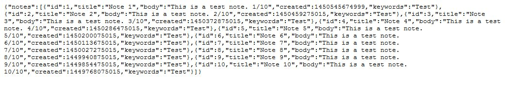
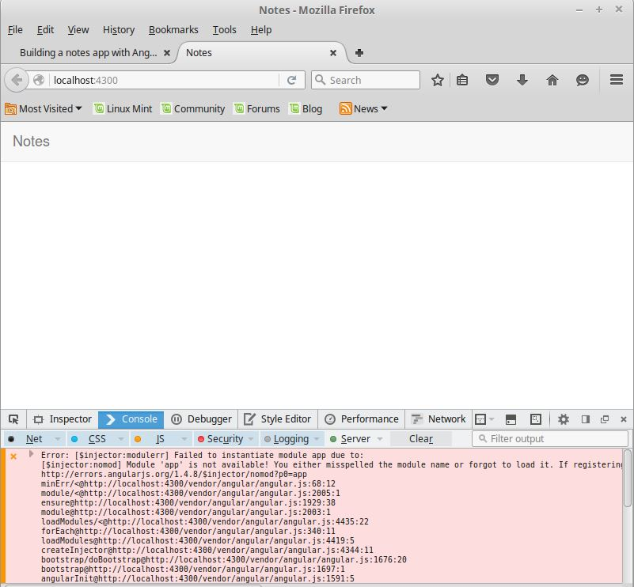
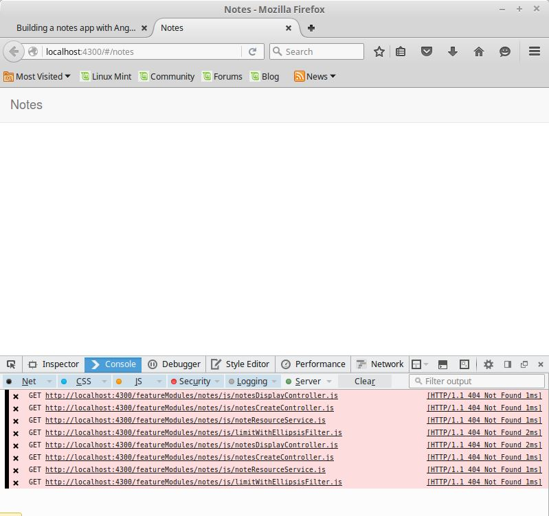
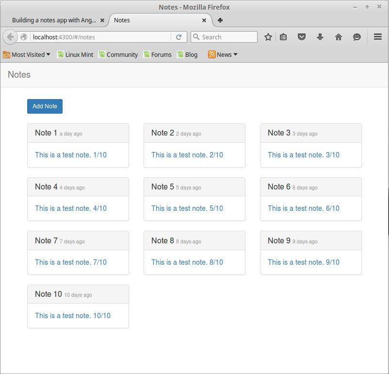
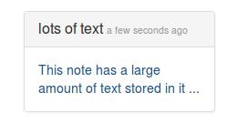

Building a Notes App with AngularJS
This tutorial is the AngularJS lab portion of a presentation on AngularJS and EmberJS. The goal is to walk through the development of a simple CRUD application to store/retrieve notes.
The Notes App
What are we building? We are building a basic CRUD app around the topic of notes. We are using notes as a simple concept to facilitate learning about CRUD operations. The app uses a simple note model that looks like:
{
"id":1,
"title":"A title",
"body":"A note body"
}
Prerequisites
Install Node.js and npm if you don't already have it installed.
The first step is to get all of the backend setup and running
The site uses a REST-based API to communicate new notes, and retrieve notes already created. The backend service uses Restify for the API and a SQLite database for persistence.
- Copy or clone the repository containing the API service folder (https://github.com/dwhoffman/codemash-angular-ember)
- Navigate to the folder containing the api
-
Run the command
npm installto install the API service dependencies -
Run the command
npm startto start the API service -
With the service started, navigate to http://localhost:8080/api/notes to verify the service is working

Starting the project
- Create a directory to hold the project
mkdir notes cdto the new directory- If you want to setup a git repo then create a .gitignore file with the following to ignore the node modules and vendor libraries
# dependencies node_modules/ vendor/ - Create a file named package.json with the following contents.
{ "name": "notes", "version": "1.0.0", "description": "Demo notes application using AngularJS", "license": "MIT", "devDependencies": { "bower": "^1.4.1", "http-server": "^0.8.0" }, "scripts": { "postinstall": "bower install", "start": "http-server app -a localhost -p 4300 -c-1 -o" } }This config file contains the configuration settings for the project. Listed devDependencies, like Bower, should be installed for you when running
npm installlater in this tutorial. Included is a post install hook to run bower install and a simple start method to run the development server and host the app. - Setup Bower install folder by creating a .bowerrc file containing
{ "directory" : "app/vendor" }This config tells Bower to place the files it manages in the "app/vendor" folder.
- To add dependencies to be managed by Bower, create a bower.json file with the following contents
{ "name": "notes", "dependencies": { "angular": "~1.4.4", "angular-route": "~1.4.4", "angular-resource": "~1.4.4", "bootstrap-css-only": "~3.3.4", "angular-moment": "~0.10.2" } }The bower.json file specifies the dependencies that Bower will manage. In this case, we are using AngularJS, AngularJS routing module, AngularJS resource module, CSS from Bootstrap, and the AngularJS moment module.
- Run
npm installto setup the dependencies
Note: This section requires and will install Bower, and Bower requires git to be available on the PATH environment variable. If git is not available (on Windows git bash can be used), you will need to install/setup git.
Laying the foundations to get into the AngularJS
- Change directory into the app folder
- Create a folder named css
- Create a file app.css in the css folder with the following
body { padding-top: 75px; } nav .active { font-weight: bold; } .noteBlock { cursor: pointer; } .blockLink { text-decoration: none !important; } .blockLinkTitle { a:hover { text-decoration: underline; } } .muted { opacity: .5; } .body { margin-top: 15px; font-size: 1.2em; } .addButtonDiv { margin-bottom: 20px; } .save { margin-top: 10px; } .note-text { margin-top: 20px; } .force-wordwrap { word-wrap: break-word; } .stop-overflow { white-space: nowrap; overflow: hidden; text-overflow: ellipsis; }
- Create a file app.css in the css folder with the following
- Create a file in the app folder named index.html with the following
<!doctype html> <html lang="en" data-ng-app="app"> <head> <meta charset="utf-8"> <meta http-equiv="X-UA-Compatible" content="IE=edge"> <title>Notes</title> <meta name="description" content=""> <meta name="viewport" content="width=device-width, initial-scale=1"> <link rel="stylesheet" href="vendor/bootstrap-css-only/css/bootstrap.css"> <link rel="stylesheet" href="css/app.css"> </head> <body> <nav class="navbar navbar-default navbar-fixed-top"> <div class="container-fluid"> <div class="navbar-header"> <a class="navbar-brand" href="#/notes">Notes</a> </div> </div> </nav> <div class="container"> <div data-ng-view></div> </div> <script src="vendor/angular/angular.js"></script> <script src="vendor/angular-route/angular-route.js"></script> <script src="vendor/angular-resource/angular-resource.js"></script> <script src="vendor/moment/moment.js"></script> <script src="vendor/angular-moment/angular-moment.js"></script> <script src="featureModules/notes/js/notesModule.js"></script> <script src="featureModules/notes/js/notesListController.js"></script> <script src="featureModules/notes/js/notesDisplayController.js"></script> <script src="featureModules/notes/js/notesCreateController.js"></script> <script src="featureModules/notes/js/noteResourceService.js"></script> <script src="featureModules/notes/js/limitWithEllipsisFilter.js"></script> <script src="app.js"></script> </body> </html>This sets up the main entry point for the application. It creates the html shell for the app. There are a few items that are important to call out here.
- The html tag includes
data-ng-app="app"This line specifies the angular module that is the main/entry module for the application - The line containing
<div data-ng-view></div>This line is the placeholder where the application templates will be inserted into the application - The script tags to bring in AngularJS and dependencies are all included here at the beginning even though they are not all being used yet
- The html tag includes
-
If you run the app now by navigating to the root project folder and running
npm startyou will see the shell of the app, but the dev tools will show errors because we haven't created any AngularJS code yet. - Create the initial angular module that will serve as the AngularJS application entry point
- Change to the app directory
- Create a file named app.js containing
(function () { 'use strict' angular.module('app', ['app.notes', 'ngRoute']) .config(['$routeProvider', function($routeProvider) { $routeProvider .otherwise({ redirectTo: 'notes' }); }]); })();This code creates an angular module named app that requires the modules app.notes and ngRoute. app.notes is a module we will create to handle the notes aspect of the app, and ngRoute is bringing in the AngularJS routing library. The reason we will use a separate app.notes module is to show how code can be partitioned off into modules. The .config section has the route provider injected and we setup a default route that points to the notes route. This route does not exist yet. The whole thing is wrapped in an Immediately Invoked Function Expression that helps keep global scope clean. For now, we will continue to see errors if we run the app, but the foundation and entry point are now created.
Create the main page that shows all the notes
-
Create a folder named featureModules under the app folder This creates a place to put logical modules of the application
-
Create a notes folder under the featureModules folder This sets up a place for the notes module
-
Create two folders under the notes folder named js, and templates
- The js folder will hold the javascript and AngularJS code
- The templates folder will hold the html files that will replace the data-ng-view section in the index.html file
- Create a file under featureModules/notes/templates named notes.html to serve as the main AngularJS landing page
<div class="container-fluid"> <div class="row"> <div data-ng-repeat="note in notes | orderBy:'-created' track by note.id "> <div class="col-sm-4"> <a data-ng-href="#/notes/{{note.id}}" class="blockLink"> <div class="noteBlock panel panel-default"> <div class="panel-heading"> <h3 class="panel-title blockLinkTitle stop-overflow"> {{note.title}} <small class="muted blockLink" data-am-time-ago="note.created"></small> </h3> </div> <div class="panel-body force-wordwrap"> {{note.body }} </div> </div> </a> </div> </div> </div> </div>This creates the main landing page for the app. All the notes are displayed in a short form on the page. The interesting parts here are
data-ng-repeatrepeats the div once for each note found in the notes collection living on scope. These are ordered by the created date property and the '-' sign indicates to use descending (newest first) order. The track by indicates the property to use to distinguish elements in the notes collection. Thedata-ng-hrefsets up a link to a single note specified by the note.id. We will build this route and functionality later in the tutorial. Using the AngularJS version of href allows using expressions to build the URL. The lines that use {{}} are displaying the value stored in the property inside the braces.data-am-time-agouses the AngularJS Moment library to provide "time-ago" If this library is not included the text will not be present on the screen. -
The above template will need a controller attached to it to provide the functionality needed by the template and as a place to give programmatic access to the variables on the scope. Create a file under featureModules/notes/js named notesListcontroller.js containing
(function () { 'use strict' angular.module('app.notes') .controller('NotesListController', ['$scope', function($scope) { $scope.notes = []; }]); })();This is a basic controller in AngularJS. First we get a reference to the notes module and we attach a controller named NotesListController. The array syntax with the controller specifies what to inject into the function that specifies the controller. Notice the model, notes, does not have any proerties described. Here, it is set to an empty array, but in general scope models are plain Javascript objects and the UI will receive an undefind for any property it requires that is not on the object. Soon we will connect this controller to the backend using an angular resource object. The only thing this controller does currently is set the notes collection to an empty array. We will use the route configuration to attach this controller to the notes template.
-
Create a file named notesModule.js in featureModules/notes/js to hold the AngularJS module. It should contain
(function () { 'use strict' angular.module('app.notes', ['ngRoute', 'angularMoment']) .config(['$routeProvider', function($routeProvider) { $routeProvider .when('/notes', { templateUrl: 'featureModules/notes/templates/notes.html', controller: 'NotesListController' }); }]); })();This sets up the notes module with the initial route for notes to point to the template and controller that displays the list of notes. Additionally, it brings in the angularMoment module that is used by the template for formatting date displays.
-
Run the app with
npm startand now it looks like the original image, and the only errors are missing files -
The app currently shows nothing because we set notes to an empty array. Now we will setup a factory/service to handle the resource object and connect up the controller to return the data from the backend api. In featureModules/notes/js create a file named noteResourceService.js containing
(function () { 'use strict' angular.module('app.notes') .factory('NoteResource', ['$resource', function($resource) { return $resource('http://localhost:8080/api/notes/:id', { id: '@id' }, { query: { method: 'GET', isArray: true, transformResponse: function(data) { return angular.fromJson(data).notes; } } }); }]); })();This sets up a resource service for the notes app. Currently, the only method is the query method to retrieve all the notes. We specify the URL to the backend service, how to populate the ID property, and specifics about each method exposed. Additionally, we setup a transformResponse because the backend api wraps the data in an outer object and we need to unwrap it for the app. To use this in the notesListController we need to inject it and use it to populate the notes collection. Update the notesListController so it matches the following
(function () { 'use strict' angular.module('app.notes') .controller('NotesListController', ['$scope', 'NoteResource', function($scope, NoteResource) { $scope.notes = []; NoteResource.query(function (notes) { $scope.notes = notes; }, function() { alert('There was an error!'); }); }]); })();This change injects the NoteResource service and the query method is used to retrieve the data from the backend. The function passed in is executed on success and is used to determine when to update the notes array. Immediately after the success function there is an additional function that is executed when an there is an error. Both of these could be named or inline functions. For the tutorial we are using inline versions. Before we can fully make use of the NoteService, we need to include the ngResource module in the app.notes module. Update the app.notes module creation line in notesModule.js with the following
angular.module('app.notes', ['ngRoute', 'angularMoment', 'ngResource'])Now if you run the app withnpm startthe api running you will see:If the api is down or something doesn't work you may see the alert from the error function
Create the part of the app to allow creating notes
-
Create the template for a new note under featureModules/notes/templates named create.html containing
<h3>Create a new note</h3> <form name="createNoteForm" data-ng-submit="add()" role="form"> <div class="input-group"> <label for="title">Title</label> <br/> <input type="text" id="title" name="title" class="form-control" data-ng-model="note.title" data-ng-required="true" placeholder="title"> </div> <div class="input-group"> <label class="note-text" for="note">Note</label> <br/> <textarea id="note" name="note" cols="50" rows="10" class="form-control" data-ng-model="note.body" data-ng-required="true" placeholder="Notes go here"></textarea> </div> <div class="input-group"> <button type="submit" data-ng-disabled="createNoteForm.$invalid" class="save btn btn-primary"> Save </button> </div> </form>This template is the form/page allowing us to create a new note. The
data-ng-submit="add()"wires up the form submission to a function named Add existing on $scope. The individual fields usedata-ng-model=""to bind to specific properties on the note model that is on $scope. The Add() function on the controller will save this note object on $scope that is built/constructed using the binding on each field. -
Now create the controller for the template to create notes. Under featureModules/notes/js create a file named notesCreateController.js containing
(function () { 'use strict' angular.module('app.notes') .controller('NotesCreateController', ['$scope', '$location', 'NoteResource', function($scope, $location, NoteResource) { $scope.note = new NoteResource(); // sets up a note model as a $resource object $scope.add = function() { if($scope.note) { // perform any validation checks desired $scope.note.created = new Date(); $scope.note.$save(function() { // save the object return $location.path('/notes'); // on success of save, redirect to main note list page }); // there could be an error function added in here, but it is left out of the tutorial } }; }]); })();This controller provides the glue logic for the note creation page. The NoteResource service is used here to create a note object of NoteResource type. The result is a $resource object allowing $save to be called on the note object to create the REST call that results in saving the note. Also, the $location service is introduced. $location is an AngularJS service that handles location related functionality. Here it is used to redirect to the main list of notes page once save is successful. An error function could be added to the $save call, but has been left out of the tutorial.
-
NoteResource needs updated to handle the $save functionality and transform the result into the format needed by the api. Update the noteResourceService.js file with the following
query: { method: 'GET', isArray: true, transformResponse: function(data) { return angular.fromJson(data).notes; } }, save: { method: 'POST', transformRequest: function(data) { return JSON.stringify({'note': data}); } }This update adds the save functionality to the NoteResource objects and includes the transformRequest needed for the backend api that we are using.
-
To make all this work, we need to update the route config to include this new create functionality update the file notesModule.js with the following
$routeProvider .when('/notes', { templateUrl: 'featureModules/notes/templates/notes.html', controller: 'NotesListController' }) .when('/notes/create', { templateUrl: 'featureModules/notes/templates/create.html', controller: 'NotesCreateController' });Here the route for the create functionality is added to the routes including the template and controller to use. This tells AngularJS to route to the new create form when it sees a route of /notes/create.
-
Running the app
npm startand manually changing the url to http://localhost:4300/#/notes/create shows: -
Manually entering the url is painful, so now update the main list page with a create button Update notes/templates/notes.html and add the following to the top of the file
<div class="container addButtonDiv"> <a class="btn btn-primary btn-sm" href="#/notes/create">Add Note</a> </div>This change adds a link to point to the create note url. The Add Note button should be functional and the main list page should look like the following
To get back to the main list page without creating a note, just click the word Notes in the top banner.
Create the details view for individual notes
-
Under notes/templates create a file named note.html containing
<h1>{{ note.title }} <button data-ng-click='delete()' class="btn btn-danger">Delete</button></h1> <h5>Written {{ note.created | date:'MMMM dd yyyy, h:mm a' }}</h5> <div class="body"> <pre>{{ note.body }}</pre> </div>The
data-ng-click="delete()"line wires the click event of the button to a function named delete on the controller that will back this page. Like previously discussed the {{}} display the values contained in the properties listed. The| dateinside the {{}} for displaying the created date is a built in filter that takes a date and formats it using the format provided. -
Under notes/js create a file named notesDisplayController.js to contain the controller for this template.
(function () { 'use strict' angular.module('app.notes') .controller('NotesDisplayController', ['$scope', '$routeParams', '$location', 'NoteResource', function($scope, $routeParams, $location, NoteResource) { $scope.note = {}; NoteResource.get({ id: $routeParams.id }, function (note){ $scope.note = note; }); $scope.delete = function() { if($scope.note) { // validation checks $scope.note.$delete(function() { // make delete REST call return $location.path('/notes'); // on success redirect to main note list page }); } }; }]); })();This controller is mainly to retrieve a single note for display, but it also provides the ability to delete the retrieved note. The interesting thing with this controller (that we haven't seen before) is the $routeParams service being injected into the controller. This service is how parameters like Ids or page numbers can be retrieved from the url and used inside an AngularJS controller.
-
The NoteResource service will need updated to handle the retrieve individual note functionality Update noteResourceService.js to contain the following
query: { method: 'GET', isArray: true, transformResponse: function(data) { return angular.fromJson(data).notes; } }, get: { method: 'GET', transformResponse: function(data) { return angular.fromJson(data).note; } }, save: { method: 'POST', transformRequest: function(data) { return JSON.stringify({'note': data}); } }This update adds the get functionality to retrieve a single note and unwrap it from what the api returns. Note, there is no delete function added to the resource. The delete functionality is built in and doesn't need anything custom since it only sends the Id. Because it doesn't need any custom handling, it can be left off the NoteResource service.
-
Now we need to update the routes to be able to route to a single note update notesModule.js with the following
.when('/notes', { templateUrl: 'featureModules/notes/templates/notes.html', controller: 'NotesListController' }) .when('/notes/create', { templateUrl: 'featureModules/notes/templates/create.html', controller: 'NotesCreateController' }) .when('/notes/:id', { templateUrl: 'featureModules/notes/templates/note.html', controller: 'NotesDisplayController' });This sets up the routing to know how to find the single note display page. We setup a link to this page previously so that when you click any note it will route to this display page. Before now, if you clicked a note on the list page it would hit the otherwise or default route. Now this link should take you to the display page for a single note containing the delete button. Running
npm startand click on a note shows
Some cleanup on the main list page
-
Currently, the entire text of the note is displayed on the main list page making it so the only value of the notes display page is the delete functionality. We should limit the text of the notes displayed on the list page to 50 characters. We will do this by using a custom filter in AngularJS. Under notes/js create a file named limitWithEllipsisFilter.js containing
(function () { 'use strict' angular.module('app.notes') .filter('limitWithEllipsis', function() { return function(input, limit) { if(!input) { return ''; } var trimmedInput = input.trim(); return (trimmedInput.length > limit) ? trimmedInput.substring(0, limit) + '...' : trimmedInput; }; }); })();This filter takes in the text and the limit specified in the template where the filter is used, checks it to make sure it exists, trims the whitespace, and finally trims at the limit characters and adds '...'. We can use this filter to trim the text on the individual notes appearing on the notes list page.
-
Update the notes.html templates with the following
<div class="panel-body force-wordwrap"> {{note.body | limitWithEllipsis: 50}} </div> -
Create a note with a large amount of text and view the following

Conclusion
The demo notes app should be working at this point. This was a very simple app that touched the surface of AngularJS and how to start building applications using this tool. Where to go from here?
- Add an edit/update page to this app
- Convert from $resource to $http and promises to explore another way to make http requests
- Unit/end-to-end test the app with tools like Jasmine, and Protractor
Some links for reference